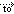

<cpanel setvar="headerimg=../images/topsubdomains.gif">
<cpanel setvar="dprefix=../">
<cpanel Branding="include(stdheader.html)">

<style type="text/css">
<?cp Branding::spritelist(.spriteicon_img_mini {float:left;margin-right:5px;background: url\{leftparenthesis}"%"\{rightparenthesis};} %,@spriteurl,images::#icon-${img}_mini {background-position\{colon}0 -${cssposition}px;width\{colon}${width}px;height\{colon}${height}px; }:) imgtype=icon,subtype=img,method=scale_60percent,format=png,img=addondomain ?>
</style>

<div class="body-content">

<div class="h1Title"><div class="spriteicon_img_mini" id="icon-addondomain_mini"></div><cpanel langprint="INDXAddonDomains"></div>
<h2><cpanel langprint="MENUAddonRedirection"></h2>

<div class="highlight">
	<form action="saveredirect.html">
	<p style="text-align:left"><input type="hidden" name="domain" value="<cpanel print="$FORM{'domain'}">">
	<cpanel sprint="$FORM{'domain'},[:comma:],0">&nbsp;<cpanel langprint="RDTo">&rarr;&nbsp;
	<input type="text" name="url" size="35" value="<cpanel SubDomain="subdomainurl($FORM{'domain'})">"><input type=submit class="input-button" value="<cpanel langprint="Save">">
	</p>
	</form>
	<p>
	<cpanel langprint="Note"></b><br /> <cpanel langprint="SUBRedirectSetupHintPre"> <cpanel sprint="$FORM{'domain'},[:comma:],0"> 

	<cpanel langprint="SUBRedirectSetupHintPost"></p>
</div>

<form action="donoredirect.html">
	<input type="hidden" name="domain" value="<cpanel print="$FORM{'domain'}">" />
	<input type="submit" class="input-button" value="<cpanel langprint="RedDisable">" />
</form>

<div class="return-link"><a href="index.html">&larr; <cptext "Go Back"></a></div>

</div><!-- end body-content -->

<cpanel Branding="include(stdfooter.html)">
